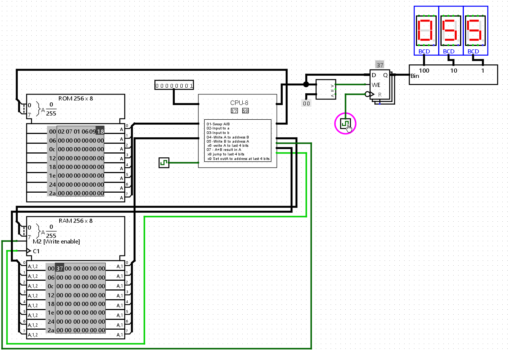
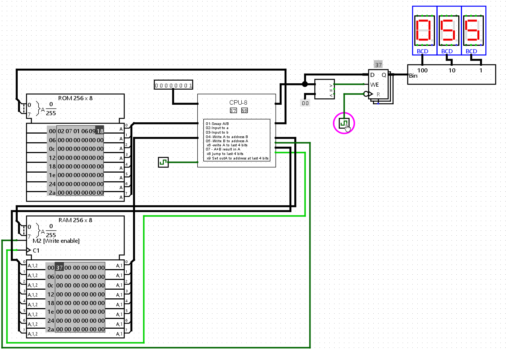
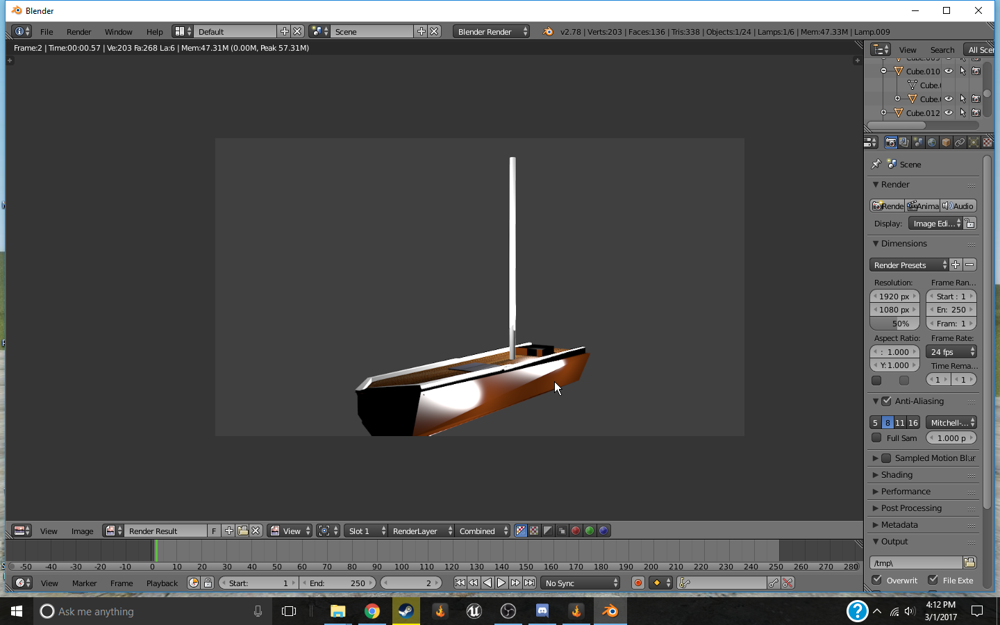
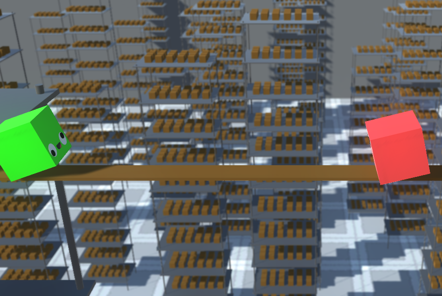

Tim's Stuff
Info about me
Hello! Im Tim, also known as ThatGuyGEWP (GEWP said like GOOP), im a 19 year old programmer who's been coding on and off since i got my first computer at 11.
im mostly self taught from many personal projects over the years, most schools i went to when i was younger had really bad or no programming classes,
but almost all of them had computers and an internet connection, things got a bit difficult when chromebooks came around but i was still able to code through various sites.
I make alot of stuff, not a lot of that stuff makes it to the internet sadly,
and a lot of it ends
up finished and/or abandoned on my hard drive, its a bad habit im trying to break!
Programming languages i use
There is a couple im most likely forgetting, i can pickup and use just about anything in a couple hours if its interesting enough. (or you know, money)
if i had to take a guess at my current experience level with the various languages i use/used, it would look like this
C#
My main goto language for the past 3 years or so.
Java
what i used before C#, quickly becomes a very bloated dependent on versions that are 20 years old mess that i despise, but understand and can use well.
C++
what i used for a year after Java and before switching to C#
really dont like how overcomplicated it is to just split code into files, headers give me headaches
GLSL Shaders and other flavors
Vertex shaders, Fragment shaders, Geometry shaders, This even includes Godot's shader language!
shader
programming is good fun for me personally.
HTML and CSS
Good enough with it to make sites, as you can see!
Rust
+10% if its with Bevy
Honorable Mentions
Python
im not really into python these days, but it was my first language and i used it alot mostly on repl.it when they were a much smaller company,
and hosting was free
Lua & LuaU
I learned alot of lua from various sources, Love2D, ComputerCraft, Roblox, and many games that use it
as a modding language.
LuaU is just a sandboxed version of lua but allows you to define and use types, lua by itself just guesses
types much like python.
I have yet to see any big company that uses lua regularly, but if there ever is one i know lua inside and out, and have read through the entire documentation.
(not LuaU, though there is only a few changes to the language itself)
Circuit and logic design
When i was a kid i always wanted to make a computer, i got inspired alot from those
minecraft videos where a guy just builds a 4 bit CPU with redstone, but i was still just a kid, never stopped me from trying though!
This eventually lead to far later in 2019-2022, and turned into me messing with various logic sims including a very good one called Logic World thats where
i got most my logic design experience, especially in its alpha version "The Ultimate Nerd Game"
I then moved onto things like logisim. also got a mini tutor from an actual processor engineer in the logic world discord!
he gave me a big push in the right direction, and it eventually lead to me making my first CPU's in both Logic World and Logisim.
turns out most the complexity comes from the code, designing a simple 8-Bit or 16-Bit CPU is good fun! and in the process of learning about it, you pick up
some things that carry over into regular programming.
fully understanding the use of various bitwise operators was a nice plus
Below is some more recent chips i made, they aren't competing with intel any time soon but they work!
 

Other Software Skills
Blender
On steam alone i have over 870+ hours on blender, and have been using it on and off since i was 12
Im still horrible at making art but if you have a concept or drawing i can translate it over to 3D in an afternoon.
Or 2D! mostly with shader magic, i cant really draw at all, im a great programmer not a great artist.
However i am fairly good with shader nodes, they are just fun to work with.
Mostly Shader based moon, 2023
Started this one in 2022 near december but forgot about it over the holidays, finished it some time in march.My first real blender project, 2017
 Gotta love that old blender 2.0 look.My old unnamed mascot, 2020
The game GMOD had this addon called Pac3 that let you create custom player models, and this was a remake of my old one from 2018! sadly the original Pac3 file was lost to time.Godot
I have only made a few basic games with godot, but each of them have been almost painless to create, its a very well thought out engine and has support for just about everything.
I like the custom language GDScript, its got alot of shortcuts which is nice but gets in the way
when your looking for something specific, using C# with godot just feels janky though
and
UI design is also a pain, i wish they just copied unity on that front.
Everyone expects you to use version control for any corruption or save errors which i dont mind since i love git, but it isnt even packaged with godot when you install it.
and working in 3D is very jank and prone to errors.
This here is one of the better looking out of first couple games i made in godot,
everything here is made by me from the code to the music, and i used this project
(along with a few less good looking ones) to get adjusted to how godot does things.
I had big plans for this little game, they may be finished in the future, maybe not, who knows!
That outline also isn't baked in, its a custom shader i wrote with the help from a few tutorials,
it allows expands the size of the player mesh with a vertex shader to make room for
the outline itself, which wasn't in any of the guides for some reason and caused me a bit of a headache before i figured it out.
Unity
That whole unity situation
instantly stopped me from wanting to use unity for any
future personal projects, and i haven't really used it since, as godot was more then enough.
However, before all that i actually used to use unity for any and all games from 2018 forward, and made many projects, some that i actually finished! im proficient enough in unity to make just about anything and i personally think that unity's animation system is the best one i've seen in any engine so far.
My current custom made C# game engine is based on an ECS that has similar wording, with GameObjects that hold Components, but functions much differently.
My first unity game, Boxing! 2018
Aseprite
Like i said before im no artist, but visuals are one of the most important
Things in a game
(After Gameplay of course), so i know a fair bit of pixel art and am
slowly getting my own art style
Tiles Tiles! (Unfinished)
!!.png "Tiles Tiles!! 16 Colors")
Awakening (Part 1 of Intro for WIP)

More Projects i made!
Life 2
A Particle life Simulator/Renderer, using just SFML.Net for the rendering, as i hadn't made SFML-GE yet!
(Old Love2D Version Source here)